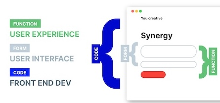

Sobre mí
Mi nombre es Gina Rolandi y nací el 8 de Mayo del 95 en La Plata.
A los 8 años me fuí a vivir a Costa Rica con mi familia, y desde hace ya 4 años que vivo en España.
Mis estudios
Soy Ingeniera en Diseño Industrial graduada del Tecnológico de Costa Rica, y decidí realizar el curso de Front End para complementar mis conocimientos como diseñadora UX/UI y hacer mi perfil profecional mas competitivo.
